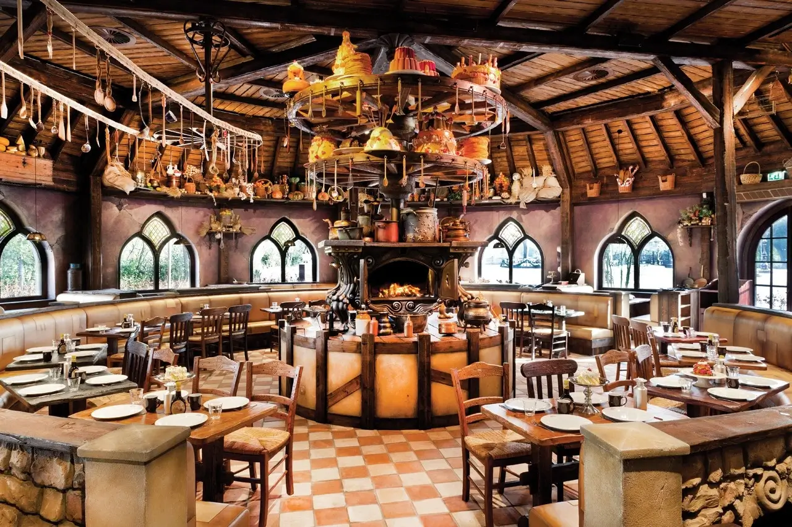
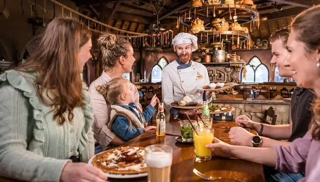
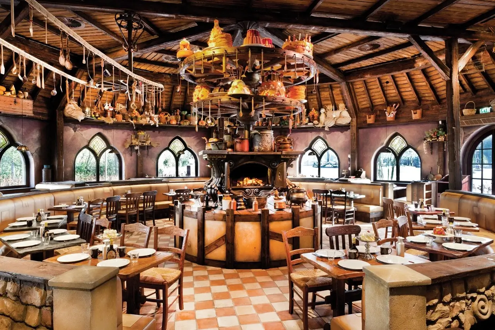
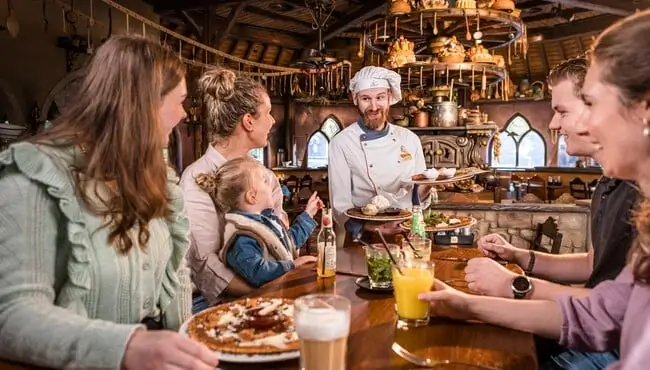

O nas
Pancake World to wyjątkowe miejsce na kulinarnej mapie Poznania, stworzone z miłości do naleśników i radości dzielenia się smakiem. Powstaliśmy w 2023 roku, zainspirowani prostą ideą: naleśnik może być czymś więcej niż tylko szybkim posiłkiem - może być doświadczeniem, pretekstem do spotkania, rytuałem dnia.
Nasza restauracja mieści się w samym sercu miasta, przy ul. Święty Marcin 23, gdzie łączymy nowoczesny design z przytulną atmosferą. To przestrzeń stworzona z myślą o każdym - rodzinach z dziećmi, zakochanych na randce, studentach szukających szybkiego lunchu i wszystkich tych, którzy po prostu kochają dobrze zjeść.
Specjalizujemy się zarówno w puszystych amerykańskich pancakes, jak i delikatnych francuskich crêpes. W naszym menu znajdziesz zarówno klasyki z syropem klonowym i świeżymi owocami, jak i wytrawne kompozycje z serem pleśniowym, łososiem czy warzywami. Nie zapominamy też o osobach na diecie - mamy wersje wegańskie, bezglutenowe i niskocukrowe.
W Pancake World wierzymy, że jedzenie to nie tylko smak, ale i emocje. Dlatego wszystkie dania przygotowujemy z najwyższej jakości składników, dbając o detale - od świeżych owoców po domowe sosy. Nasza kuchnia jest otwarta, by każdy mógł zobaczyć, jak powstają jego naleśniki - od pierwszej porcji ciasta aż po ostatnią kropkę bitej śmietany.
Choć działamy od niedawna, zdążyliśmy już zdobyć grono stałych gości, którzy wracają do nas nie tylko po smak, ale i po atmosferę. Bo Pancake World to nie tylko restauracja - to świat, w którym naleśniki grają główną rolę, a Ty jesteś zawsze mile widzianym gościem.
 


